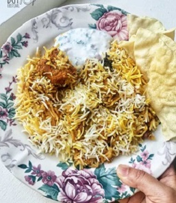
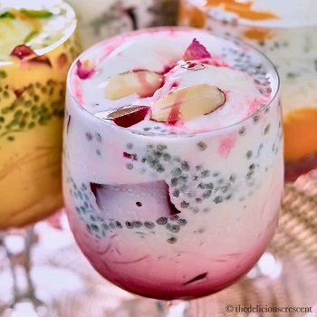

Kacchi Mutton Biryani
Recipe
Kacchi Mutton Biryani is a delicious rice dish where tender goat or lamb meat pieces are marinated with lots of fried onions, whole spices, fresh herbs and yoghurt. This marinated meat sits on the bottom of the pot topped with half-cooked rice which is drizzled with saffron-infused water and more fried onions and fresh mint leaves. Sealed and slow-cooked in an oven or on stove-top to a delicious aromatic finger-licking biryani that you may serve with some kachumber, salad, and if you are like us, more pappadoms!
Pizza
.jpeg)
Recipe
I love eating pizza a lot. It is my favorite food. My mother is the person who makes pizza for me. There are different types of pizza but I love cheese pizza mostly. Because I think these types of Pizzas are healthy and give me strength. Eating a lot of pizza is not good for health. But I always love to eat a lot of them. My parents scold me sometimes for that. But it is really hard to avoid pizza for me. It is like a drug to me. Pizza is mainly Italian food, but now it’s popular worldwide. Lots of my friends love to eat pizza too. And sometimes we eat together in some restaurants. While we hang out, I love to have pizza there. I tried to make it myself, but I found it really hard. I didn’t have the proper ingredients to do that. I prefer buying it or made by my mom.
Faluda
Recipe
The creamy, sweet and refreshing Indian delicacy falooda, is a layered summer dessert drink made with vermicelli noodles, rose syrup, sabja seeds, milk and ice cream. Depending on the recipe you might see some almonds and pistachios on the top. Falooda happens to be extremely fancy to look at, thanks to all the vibrant ingredients. Perfect for a summer day, it plays well on your taste buds. But is falooda a drink or a dessert? Scroll down to know the interesting story.